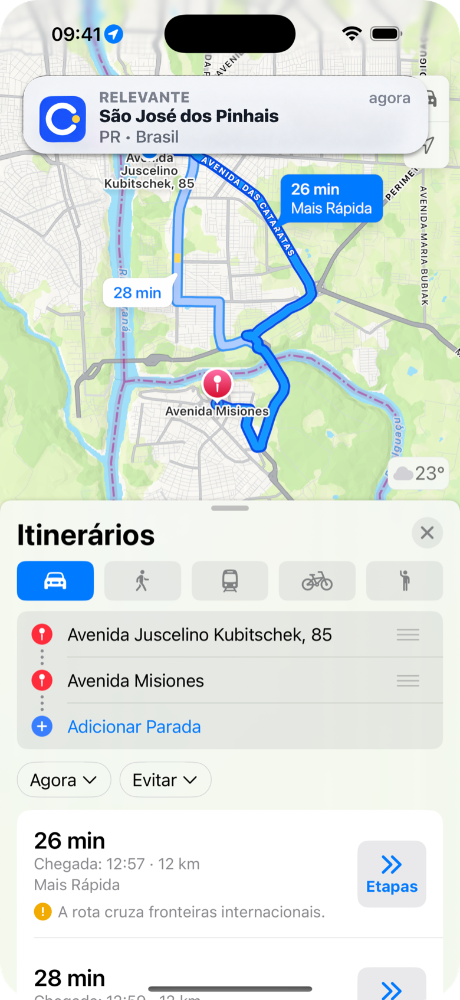

App para iPhone
Um aplicativo simples para matar uma curiosidade na viagem: em que cidade estamos agora?
Cada cidade, no momento certo.
Mostra cidade, estado e país, sem sair do aplicativo de mapas.

Na viagem
A cidade aparece. O mapa continua.
Aviso silencioso
Banner nativo do iPhone com cidade, estado ou província, e país. Sem som, sem abrir o app, sem cortar o áudio da rota.
Sem sair da rota
Convive com Mapas, Waze ou Google Maps. O aviso não se sobrepõe à navegação e não precisa que você volte ao Lugali.
Cidade por cidade
O histórico fica no próprio iPhone. Sem conta, sem servidor e sem trilha contínua de GPS.
No mapa
Continue a rota. A cidade aparece.
Receba um aviso discreto sem sair do aplicativo de mapas.

Histórico
Sua viagem, cidade por cidade.
Relembre os lugares identificados durante o caminho.

Instale no iPhone.
O Lugali é um app da Pixelun. A instalação acontece na App Store, não nesta página.
Abrir a App Store